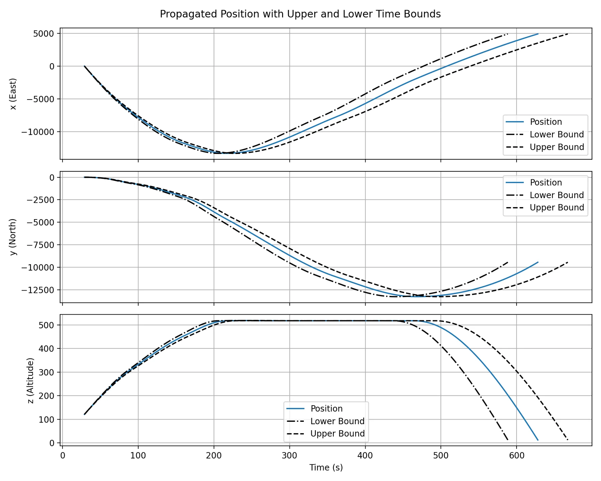
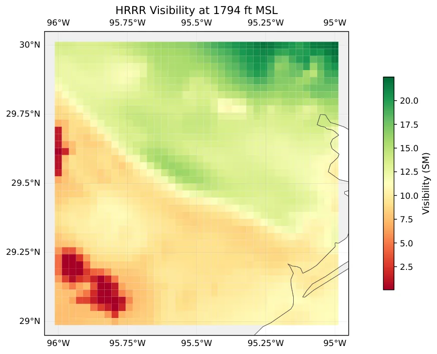
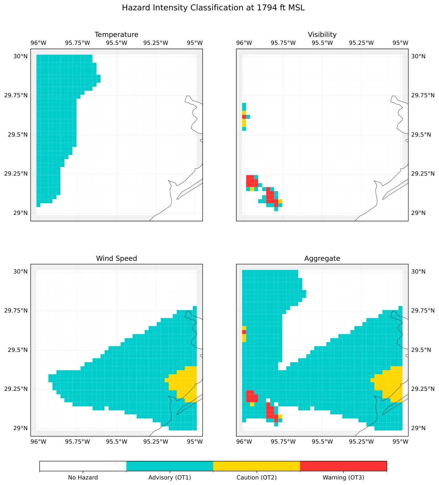
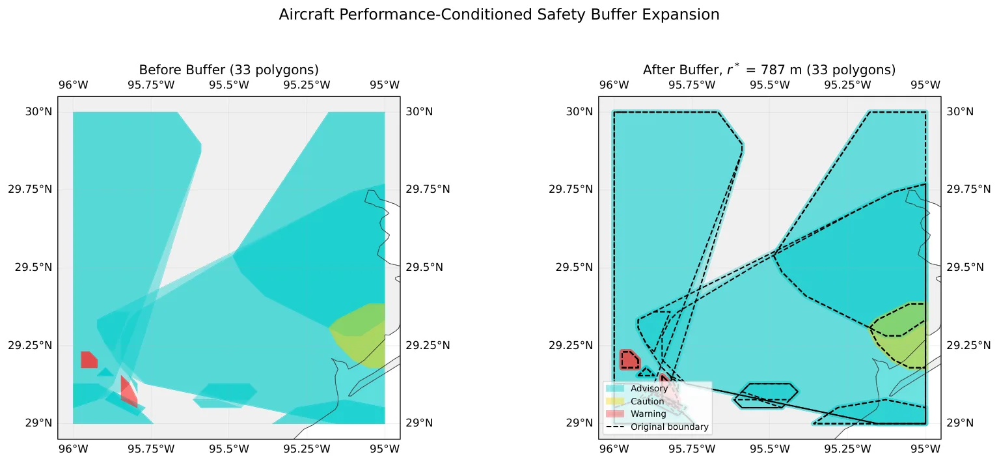
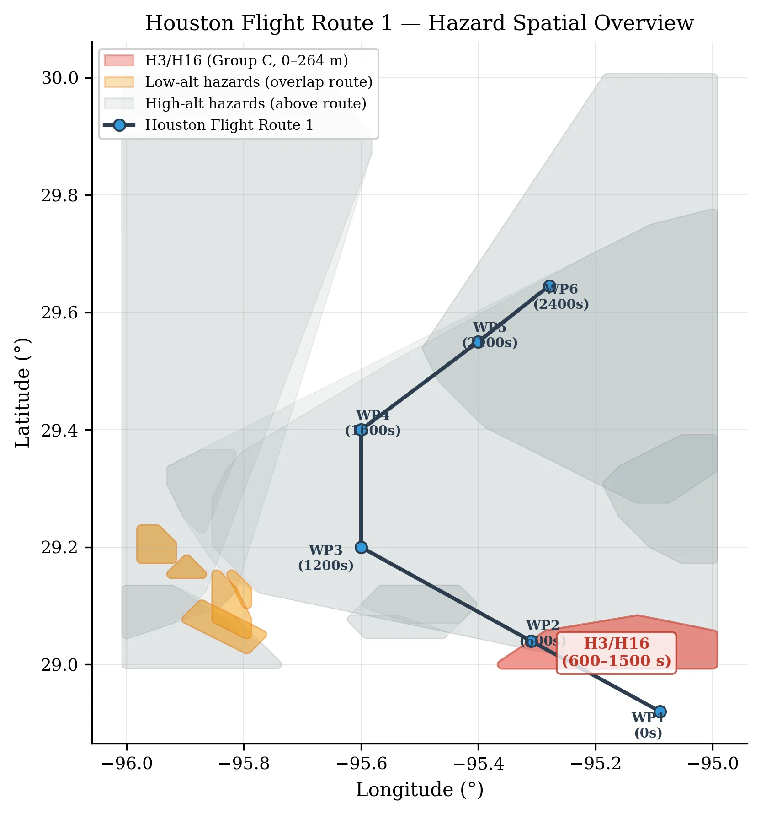

面向操作者条件天气风险的置信度冲突检测Uncertainty-Aware Conflict Detection Against Operator-Conditioned Weather Hazards
A 级 uncertainty-aware state estimation，强调不确定性传播与几何冲突检测。
一句话工作总结
这是可靠状态估计方向的 A 级桥接工作：把状态协方差转成可与 3D 风险体比较的几何对象。
半海报（待补全）
当前记录尚未达到完整海报质量门槛，暂不把摘要或评分理由冒充方法/实验结论。
待补字段：研究上下文.lineage（至少 2 条实质条目）、研究上下文.network（至少 2 条实质条目）。下一次任务需从论文全文或官方 HTML 提取证据后再发布。
摘要
论文将 NURBS 轨迹、Kalman Filter 协方差传播和操作者条件天气多面体结合，用空间不确定性管与危险体网格相交进行冲突检测。
Strategic flight plan validation in Advanced Air Mobility (AAM) environments requires robust methods for predicting aircraft state uncertainty and detecting potential conflicts with dynamic airspace hazards. This paper presents a novel framework for uncertainty-conditioned trajectory prediction combined with polyhedra hazard representation for pre-flight conflict detection. We introduce a closed-form uncertainty estimation method that couples non-uniform rational B-spline (NURBS) curve fitting for kinematic trajectory generation with a Kalman Filter for state covariance propagation. Drawing from the Light Propagation Algorithm (LPA) paradigm, we employ a sigmoid-blended measurement noise model that captures the uncertainty reduction behavior of flight management systems approaching the required time of arrival (RTA) for waypoints. The resulting temporal uncertainty bounds are derived through a velocity-to-time variance transformation, enabling probabilistic assessment of arrival time deviations along the flight path. For hazard representation, we develop an operator-conditioned classification scheme that transforms gridded environmental data, specifically weather phenomena, into three-dimensional polyhedra volumes with intensity-based stratification. These hazard polyhedra incorporate aircraft-specific safety buffers computed from vehicle performance characteristics. Conflict detection is performed through mesh intersection algorithms operating on the spatial uncertainty tube surrounding the mean trajectory against the hazard polyhedra and temporal overlap. The framework enables the continuous strategic validation of flight plans throughout the pre-flight planning time horizon as environmental conditions evolve.
图表/页面预览

{kind=link}

{kind=link}

{kind=link}

{kind=link}

{kind=link}
